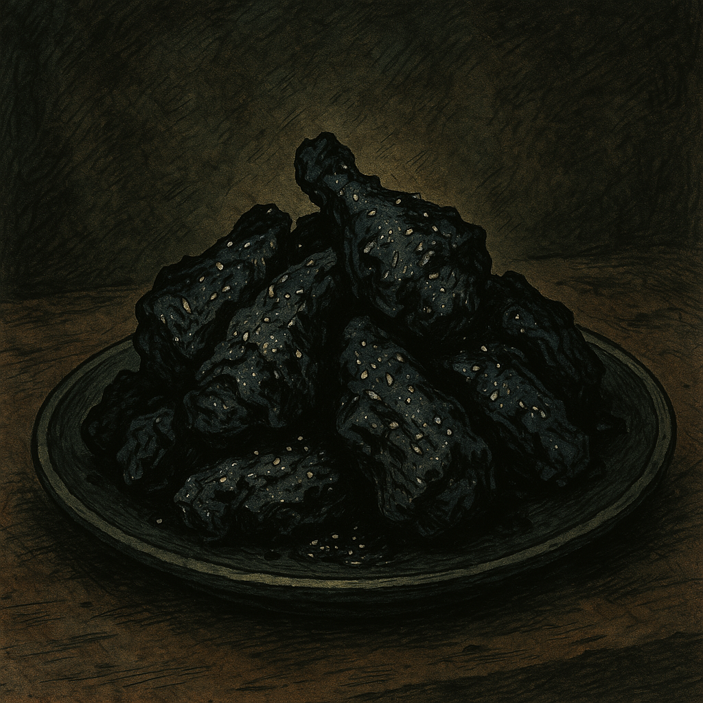

Void Wings

Charred, cursed, and dangerously addictive.
Description
Served after midnight in the back corner of Odin’s Dive, these jet-black wings are a favorite among bounty hunters, alchemists, and desperate spellrunners trying to forget the night’s work. Charred seitan or tofu is drenched in a thick, sticky glaze made with activated charcoal, molasses, and a suspicious amount of cayenne. The glaze gets its eerie shimmer from obsidian ash—a magically inert byproduct of spell-fire cookery—and a whisper of basilisk bloodroot for an extra kick (which you can substitute with smoked paprika and garlic). These wings aren't just a meal—they’re a pact.
Ingredients
For the wings:
- 1 block extra-firm tofu (pressed) or 2 cups seitan, torn into chunks
- 2 tbsp neutral oil (for frying or baking)
- 1 tbsp soy sauce
- 1 tbsp cornstarch (for crisping)
For the Void Glaze
- 2 tbsp blackstrap molasses
- 1 tbsp maple syrup or agave
- 1 tbsp soy sauce or tamari
- 1 tsp apple cider vinegar
- 1/2 tsp garlic powder
- 1/2 tsp smoked paprika (basilisk bloodroot)
- 1/4 tsp cayenne pepper (or more for high-level fire resistance)
- 1/2 tsp activated charcoal powder (obsidian ash)
- Optional: a pinch of edible glitter or black sesame for that extra sparkle of doom
Instructions
- Prepare the wings: Tear your tofu or seitan into bite-sized, jagged pieces. If using tofu, press it beforehand for at least 15 minutes to remove excess moisture. Toss the pieces in soy sauce and cornstarch until evenly coated.
- Cook the base: In a cast iron skillet or oven (400°F / 200°C), fry or bake the tofu/seitan until crispy and browned. Flip halfway through for even charring. This should take around 15–20 minutes.
- Concoct the glaze: In a small saucepan over medium heat, combine molasses, maple syrup, soy sauce, vinegar, garlic powder, smoked paprika, cayenne, and activated charcoal. Stir constantly until the glaze thickens slightly, about 3–5 minutes. It should coat the back of a spoon and smell like danger.
- Bind the pact: Toss the crispy tofu/seitan pieces in the warm glaze until every shard is coated in shadow. Return to heat for another 2–3 minutes if you want the glaze to caramelize slightly.
- Serve with a warning: Plate up, sprinkle with black sesame or glitter (optional), and serve hot—preferably in dim lighting with cursed jazz in the background.
Home